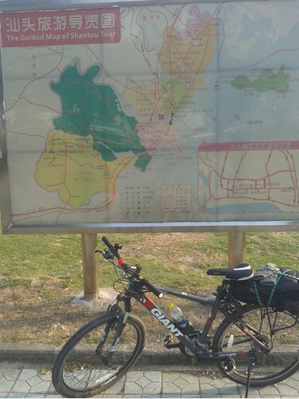

昨夜3点多才睡着，醒来已经9点了。
下去买了个玉米和煎饼，上来吃了后，10点出发。
从学校操场后走的，进入到新港东路，再转去猎德大桥。
直行到天寿路、五山华工，天源路等，到达天河客运站。
上了324国道。不疾不徐的骑行，沿路有看到几个骑行的。
后来和一个聊了起来，一起同行了会，他是去揭阳的，
广州一个体校大三的学生，之前有骑到过珠海，这次是骑回家。
同行一会，后来就分开了，调高了座位，好像是舒服点。
中间有小腿抽筋了好几次，不算严重，就没有很重视。
到增城境内，经过农工商学院后，车后胎一下气跑光了。
仔细检查，看到个订书针扎在车轮上，郁闷。
恰好附近是个镇，就推着找到一家单车铺，三块钱补好了。
继续出发，一段后吃了个八宝粥，再行一小时左右。
右腿抽筋，下车，由于座位高，左腿支撑的时候突然也抽筋了。
是大腿和小腿同时抽筋，，一下整个人就站不住了。
坐倒在路边，恰好有个路灯杆，就靠在上面，两腿伸直。
每隔十几分钟，就试着动一下，稍有不对就又抽筋。
两条腿都抽，一下很茫然，没想到第一天就出这样的情况。
后来那个骑行的学生也经过了，一直看我，我摆手表示在休息。
他就骑着先走了，后来有想也许应该让他帮忙把车子挪下的。
沿路经过的人都会看我，可能有觉得我是出了什么事吧。
大概坐了一个半小时，才一下站了起来。
动一动，然后慢慢推车往前走，不远就看到人家了。
看到龙廷轩大酒店和小云饭馆，龙廷轩138特价房。
我在想是不是住这里，对自己好一点，奢侈一晚上。
先去了对面的小云饭馆吃饭，要了个韭菜炒蛋，还18元。
一会一个白衣美女骑着山地车过来，应该是饭店中人，
过来坐了会就走了。吃饭时邻座一对男女电话问有无单房。
我留意了下，感觉他们应该是去龙廷轩的，后来果然是。
看来龙廷轩是有房间的。吃完问了下饭馆服务员，
说往前不远镇上有很多便宜旅馆，于是就推车慢慢过去找。
天已经黑了，走了不是很远就看到一家，35元，看了下凑合。
就把车子放在一楼的麻将房里，上锁。房间在三楼，爬楼梯腿疼呀。
旅馆名字叫诚记，新开不是很久。条件确实很一般了。
之前查了下抽筋可能是因为缺钙，就出去买钙片，
走了一段到镇政府对面，好几家药店。
在仁福堂药店，最便宜一瓶要28，我只有20.
店员小美女还是卖给我了。路上咬了三颗。
今晚有恒大对柏太阳神的亚冠半决赛，旅馆不能看。
手机关注了下是赢了。一直到半夜都睡不着。
两条腿都不敢怎么动，盘算这次的旅行是不是要泡汤。
三点多小华给我打电话问情况怎样，说不行就把车子寄到他家。
我想了下说再过两天看看情况。查了下邮寄车子的情况。
到5点多才睡着，直睡到11点多，起来续了一天房间。
10月3日。
出去镇上吃饭，慢慢走了一圈，感觉镇子不是很大。
看到好几家单车修理店，问了下装货架的事情，要四五十。
走了快一圈，才看到家饭馆，一家人开的。点了个猪杂粥，
还有炒粉，量很多，粥喝完了，炒粉估计就吃了三分之一。
这家好像是四个小孩，看着都挺活泼的。吃完慢慢溜达回去。
再经过仁福堂药店附近，有个购物超市，进去逛了一圈。
回到房间，又睡了两三个小时，到5点，出去吃了隆江猪脚饭。
然后上凯隆网吧看了下昨晚恒大的比赛。
10月4日
起的算比较早，8点半出发。路对面单车铺装了个货架。
慢行，抽筋了一下，不敢发力了，速度基本都是2-3,2-4左右。
过长宁，龙华，12点到博罗，拐进县城，吃饭1小时。
想找兰州拉面来着，没有看到，就吃了个麻婆豆腐。
吃完继续出发，走博惠路，然后绕到惠博大道。
这条路太爽了，很好走，直行，一个多小时就到惠州。
比走324要快很多，到惠州后，走一个大桥，到西湖。
绕着西湖走了一圈，再返回到324国道，继续前行。
走了38公里左右，到达惠东县，6点了，遂找旅店。
国道边，妇幼保健院附近，三友旅店，40块。
前台美女挺有亲和力。洗澡出去转一圈。
路过个药店，感觉有点感冒，就进去买了个感冒冲剂。
药店个女店员对我微笑，不知是笑我2呢，还是对我有意思呀。。。
出来转一圈到东华路，还是没找到兰州拉面，
就随便吃了个桂林米粉，吃完感觉挺不舒服，难吃呀。
后来走了几步就看到兰州拉面了，还有kfc和麦当劳。
10月5日
6点半就起来了，一夜睡的感觉挺冷。
下去要开水，感觉有点冷，就回到房间穿了外套。
再出去吃了个kfc早餐，回去感到困，就又睡着了。
直到9点，起来下去拿了开水，冲了感冒冲剂。
10点出发，今天好热，很晒呀，一小时左右到捻山镇。
镇上太多车，灰尘沙子很多，慢慢前行，这段走的比较辛苦。
途中过一挺大加油站，那有个饮水机，补充了点水，不错。
在出捻山镇时，吃了个八宝粥和香肠，再行一段。
这边附近应该是有海滩，好多私家车都是去玩的，
经过了一个路口以后，一下车就少了，应该都是拐去沙滩了吧。
再行到吉隆，路边吃了个兰州拉面，再过鹅埠，镇口买个6个桔子，2元。
发狠，用2-6，没怎么耽搁，骑行一大段后，到海丰，已经快6点。
进入县城内，穿行过去再到324国道，夜行不到两小时，到达陆丰。
这一路都没路灯，不过感觉还好，30多公里吧。八点半到的陆丰。
过一个桥，好多骑摩托车的，在桥上钓鱼。市区骑一段。
路边吃了香水饺，15块钱，做的跟麻辣烫一样，里面加了很多东西。
找到个旅馆，50块钱，很不错，很大双人间，有线电视。
洗澡，喝着感冒冲剂，看个足球比赛，感觉还挺好的。
给7打电话，以为他在陆丰小燕子家呢，没想到他们已经在深圳了。
10月6日
睡到9点多了，起来洗漱后，下去找7推荐的那个牛肉饼汤。
天好晒呀，走了一段真是晒的不行，问了几家都没有牛肉饼汤。
就吃了个牛肉汤，15块钱，还可以吧。吃完回去都11点了。出发。
走不到一小时，路边买了几个黄皮的桔子，用了9块钱，好贵。
天气太热了，还好多上坡，好几次都推车上去。
到下午4点多吧，还没到普宁，又一个大坡，看到路边一家饭馆。
就过去炒了个菜，挺混乱一家庭饭馆，茶倒蛮好喝的。
一路看到好多茶庄，潮汕人很喜欢喝茶呀。
吃饭的时候，看了下广州fc贴吧，原来正在比赛。
我还以为是晚上呢，没想到是3点45开始，对鲁能的天王山之战。
很快就三比一了，这场只要拿一分就夺冠了。
关注到上半场结束，也吃完了，就继续出发。
过了这个坡以后，没多久就到普宁县城了，原来普宁是服装城。
看了下才5点多一点。但是进县城走了一段，看着天就黑下去了。
想了下，还是决定不继续往前了，就在路边的旅店住下来了。
冲个澡，出去找吃的，走到路对面巷子里，原来好大天地。
很多年轻男女，非常热闹，原来这边好多工厂，路上男女成群。
一个个年轻的面孔，很多男的打扮跟二流子一样，感觉有点乱。
可能富士康的那些工厂里，也就这个样子吧。随便吃了个麻辣烫。
看到有室外唱歌的地方，一首歌两块钱。好多人围在那里。
10月7日
9点出发吧，一路都是人家，直接到汕头潮南区，
发现普宁和潮南区都无缝衔接了，一路蛮爽，走走看看。
从潮南区到潮阳区，倒是经过了一段没人的地方。
在潮阳区，一个路口走错方向了，走了比较远，
看到条大路，路边吃了个面条，问了老板才知道走错了。
再返回去，恰好上学时间，好多中学时穿白色校服很好看。
都是骑车上学的，各种不错的自行车，富有朝气呀。
这边在修路，骑了一小时左右吧，到一个大桥边。
看了下有渡口，就过去坐了，一人一车，两块钱。
坐轮渡的感觉蛮爽的，过去后骑一段，看到一片老的骑楼。
非常有感觉，拍了很多照片。走海滨路到市内乱转。
在林百欣展览馆附近，看到好些外国年轻男女，好漂亮。
有个俄罗斯的天鹅湖的舞蹈海报，怀疑他们是舞蹈团的。
那后面是很大的一片草坪，很多人带的小孩在那玩。
想了下准备回广州了，有个石炮台公园过去看了下，
单车不能进去，就算了。骑车往汽车站。
到了后恰好一个人问我，说车子也可以带上的。
我就跟着去了，交了两百，后来7点钟上了车。
正好单车可以放在下面车厢。硬座。好困呀。
走高速，沿途都经过这几天我经过的城市。
大概12点多到的天河客运站附近，我再骑车回来。
回到家已经两点多了。
-------------------------------------
这次出去骑行算是好多状况，感冒，补胎，抽筋。
尤其是第一天的抽筋，一下一个多小时不能动。
把我吓到了，意识到没必要往快的赶，身体才是最重要的。
所以后面的几天都悠着骑，没有给自己定很大目标。
重要的是这趟骑行还是坚持完成了，没有半途而废。
